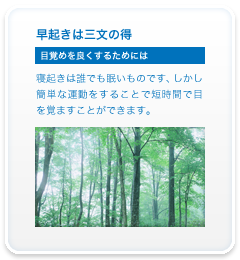
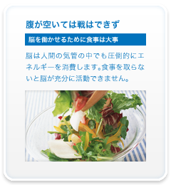
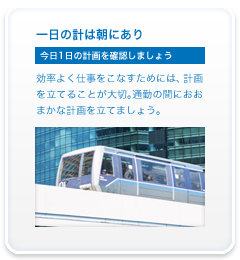
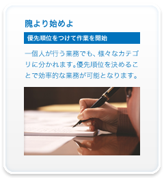
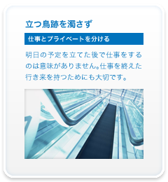

Q1天気の良い朝、まず起きて何をする？
- 軽くジョギングをする
- ストレッチで目を覚ます
- テレビで情報収集
- 遅刻しそうなので、すぐに出発
- 2度寝する

Q2一日の元気は朝ご飯から！さて何を食べる
- 料理を作って本格朝食
- パンとスープでシンプル朝食
- サプリメントですませる
- 食べない
- 食べるどころか吐きそうだ...

Q3今日も電車で通勤、会社に着くまで何をする？
- 目を閉じて仕事の進行をイメージ
- 新聞を読んで情報収集
- 音楽を聴いて気持ちをリフレッシュ
- 眠って体力を温存
- ただ「ぼ～っ」としている

Q4さて会社についた、まず何をする？
- 務のプライオリティを確認
- メールを確認
- とりあえず業務開始
- 脳にエネルギー、プリンを食べる
- 仕事のフリしてネットサーフィン

Q5終業30分前、さて明日のために何をする？
- 明日のTo doリストを作成
- ギリギリまで業務に全力投球
- 同僚と飲みに行く打ち合わせ
- 仕事が終わらないので残業する
- なぜか、すでに帰途についている
